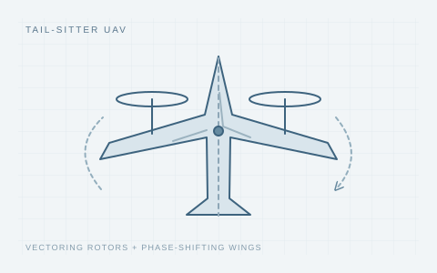

Outdoor flight
Outdoor flightSynergistic disturbance rejection for tail-sitter UAV hover mode and transition phase: vectoring rotors and bioinspired phase-shifting wings
Aerospace Science and Technology, 2026

Concept illustration / 研究示意
Design, aerodynamic modeling, and full-attitude control of a tail-sitter UAV with vectoring rotors and phase-shifting wings.
Outdoor flight